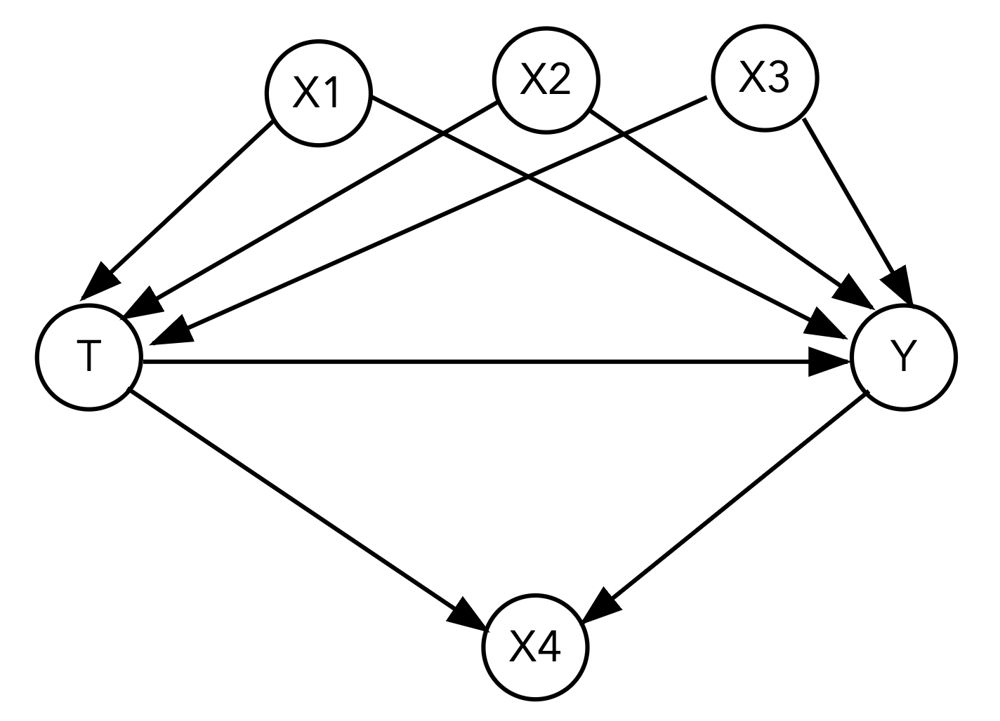
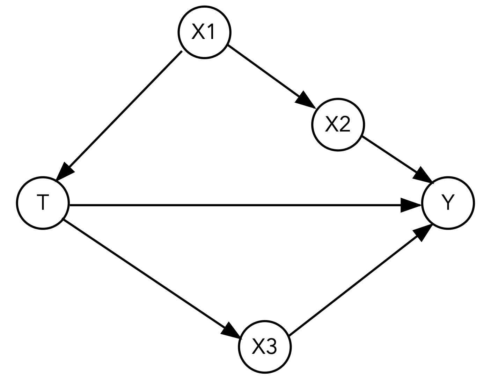

Worksheet 4 📈#
Regression and causal graphs
—TODO your name here
Collaboration Statement
TODO brief statement on the nature of your collaboration.
TODO your collaborator’s names here
Learning Objectives#
Become familiar with the
statsmodelslibrary for running regression modelsUnderstand the relationship between the regression coefficient for a treatment variable and the average treatment effect
Practice determining when adjustment is needed vs when it is not given a DAG
Read and reflect on a technical article introducing propensity scores as an observational study technique
1. Statsmodels [1 pt]#
statsmodels is a popular Python library for statistical modeling and analysis. It provides a wide range of statistical models and functions similar to what you might find in R. We’ll use statsmodels throughout the worksheet and in the upcoming classes to fit regression models.
Like matplotlib and seaborn, statsmodels has an extensive API with many different ways to achieve the same result. For the course, we’ll work primarily with the formula.api submodule for integration with pandas DataFrames and the patsy syntax for specifying regression formulas. The following official user guide is a good starting reference for how we’ll primarily be using statsmodels:
First, let’s import the statsmodels library using the standard alias smf (statsmodels formula) for the formula API, along with the other data science modules we have been using:
import pandas as pd
import numpy as np
import seaborn as sns
import matplotlib.pyplot as plt
from ipywidgets import interact_manual
# standard import alias for the statsmodels formula API
import statsmodels.formula.api as smf
Using statsmodels to fit linear regression models#
Up until this point in class, we have been estimating various versions of conditional expectations of the form:
For example, we have calculated the conditional expectation of the outcome given a particular treatment value \(t\):
As well as the conditional expectation of the outcome given particular treatment and covariate values \(t\) and \(x\):
These are all useful calculations, but they only tell us about the conditional expectation of the outcome given particular treatment and covariate values. What if \(X\) was continuous, and we wanted to know the effect of \(T\) on \(Y\) across all values of \(X\)?
This is where line fitting via linear regression is useful. Under certain statistical assumptions, we can actually model the conditional expectation. The following linear regression model, where the \(\beta\) values are the regression coefficients that we will estimate from our data and where \(\epsilon\) is an unknown error term:
actually gives us the following estimated conditional expectation:
And if we have multiple covariates, the following linear regression model:
gives us the following conditional expectation:
When we set the covariates to particular \(T=t\) and \(X=x\) values, we get the conditional expectation of the outcome given those values:
Note
Unlike the causal study design assumptions we have been discussing, we won’t cover the assumptions that make linear regression a valid model for the conditional expectations. For example, we won’t discuss the properties of the error term \(\epsilon\).
For now, we’ll take linear regression correctly modelling conditional expectations as a given and focus on how to fit and interpret the regression coefficients. If you are curious and want to learn more about the properties of linear regression, see the following resource:
Chapters 2.11 - 2.25 of Causal Inference: The Mixtape
Let’s take a look at how to use statsmodels to fit a line to some data. We’ll load in the same gapminder data from Worksheet 3 and fit a line to the relationship between life expectancy and GDP per capita for countries in Europe in 2007.
1.1#
First, let’s select the data for Europe in 2007 and visualize the relationship between life expectancy lifeExp and GDP per capita gdpPercap using a scatter plot. The data should roughly follow a linear relationship, with some spread:
gapminder_df = pd.read_csv("~/COMSC-341CD/data/gapminder.csv")
# TODO select the gapminder data for Europe in 2007
selected_df = None
# TODO show the scatter plot between 'gdpPercap' and 'lifeExp'
Let’s now fit a line to this data using a statsmodels formula.
We can specify the linear regression we want to fit using a string describing the formula. The formula is specified in the format:
'outcome ~ 1 + covariate1 + covariate2 + ...'
where:
outcomeis the dependent variable (the outcome or “y” we want to predict)1is the constant term (the intercept)covariate1,covariate2, etc. are the independent variables (the “x”s we use to predict the outcome)
This string formula is then passed into the smf.ols (ordinary least squares) function to fit the model. What is convenient is that we can pass in the pandas DataFrame containing the data directly to the function as the data argument, and the formula will be applied to the DataFrame column names. For example, if we have a DataFrame df with columns y, x1, and x2, the formula 'y ~ 1 + x1 + x2' will fit a linear regression model with those columns to the data. The code that corresponds to this is:
formula = 'y ~ 1 + x1 + x2'
linear_reg_results = smf.ols(formula, data=df).fit()
Let’s try this out on our gapminder data:
lifeExpis the outcome variablegdpPercapis the independent variableinclude a constant term in the model by adding a
1to the formula
# TODO fit the linear regression model with the formula above
formula = ''
linear_reg_results = None
We can examine the fitted \(\beta\) values using the params attribute of the fitted model object, which returns a pd.Series of the coefficients:
# TODO print the fitted coefficients
# print(linear_reg_results.params)
We can also call the predict() method on the fitted model object to get predictions on a DataFrame of values that match the column names in the original data.
Let’s apply this to a range of GDP per capita values to get the fitted life expectancy values to plot the fitted line. Use the np.linspace function to generate a list of num=1000 evenly spaced values, starting at the minimum and ending at the maximum GDP per capita gdpPercap values in the data.
# TODO generate evenly spaced values
# x_values = np.linspace(start=TODO, stop=TODO, num=TODO)
# TODO save the predicted values, using the same column name as the original data
# y_values = linear_reg_results.predict(
# pd.DataFrame({"gdpPercap": x_values})
# )
Finally, let’s visualize the scatter plot of the original data and the fitted line on the same plot.
We can use the sns.lineplot() function to plot the fitted line, passing in the x_values and y_values as the x and y arguments respectively.
# TODO plot your selected data for Europe in 2007 and the fitted line
Interpreting regression coefficients#
1.2#
In order to use linear regression for causal inference, we’ll need to pay close attention to the interpretation of the regression coefficients.
In general, the regression coefficient \(\beta_1\) for a covariate \(X_1\) can be interpreted as the expected change in the outcome \(Y\) for a one unit change in \(X_1\), holding all other covariates constant.
For example, suppose we have a linear regression model fitting the relationship between coffee price \(Y\) in dollars per pound ($/lb) and global temperature in celcius \(X_1\) and coffee species \(X_2\) (0 = robusta, 1 = arabica):
The regression coefficient \(\beta_1\) can be interpreted as the associated expected change in coffee price \(Y\) for a one degree Celsius increase in global temperature \(X_1\), holding the coffee species \(X_2\) constant. If \(\beta_1 = 3\), we can interpret this as:
In the collected data, the price of coffee is associated with an increase of $3 per pound for each degree Celsius increase in global temperature, while holding the coffee species constant.
Since a fitted regression is linear, we can also scale the units of \(X_1\) to be different. For example, we could interpret \(2*\beta_1\) as the associated expected change in coffee price \(Y\) for a two degree Celsius increase in global temperature \(X_1\), holding the coffee species \(X_2\) constant, or even convert the units to Fahrenheit instead of Celsius.
Let’s now interpret the regression coefficients for our gapminder data. Multiply the gdpPercap coefficient by 1000 to convert the units to thousands of dollars, and interpret the new coefficient for the gdpPercap variable. In your response, be sure to include the year and selected continent of the data used to fit the model.
Your Response: TODO
# TODO use this cell to scale the gdpPercap coefficient by 1000 and interpret the new coefficient
1.3#
A common transformation applied to variables in linear regression models is to take the natural logarithm of the variable, which does two things:
it often helps make the variables “better-behaved” (e.g. more like a normal distribution)
it also changes the interpretation of the regression coefficients.
Let’s apply this transformation to the gdpPercap and lifeExp variables, and interpret the new regression coefficients.
First, create new columns in the full gapminder_df DataFrame containing the log-transformed variables by applying the np.log() function to the gdpPercap and lifeExp columns:
# TODO create new columns in the original gapminder_df DataFrame containing the log-transformed variables
gapminder_df['log_gdpPercap'] = None
gapminder_df['log_lifeExp'] = None
Next, let’s plot the histograms of the original and log-transformed ‘gdpPercap’ side-by-side to to see the effect of the transformation.
To create the side-by-side plot, we use the plt.subplots() function to create a figure with two subplots. This function has many optional arguments for figure size, layout, etc. that we can use to customize the plot, but the primary arguments we need to specify are:
nrows: the number of rows in the figurencols: the number of columns in the figurefigsize: the size of the figure, which takes a tuple of the figure(width, height)in inches
This then returns a (fig, axs) tuple, where fig is the figure object and axs is an array of the axes objects.
We can think of the fig object as the overall figure, and the axs array corresponding to the individual subplots.
For example, if we want to create a figure with 1 row and 2 columns, we can make the following plt.subplots() call. Then, we can plot on the first subplot using axs[0] and the second subplot using axs[1], as well as set the title and axis labels for each subplot:
# TODO run this cell to see an example of the `plt.subplots()` function
fig, axs = plt.subplots(nrows=1, ncols=2, figsize=(12,6))
print("number of subplots:", len(axs))
# axs[0] is the first (left) subplot, axs[1] is the second (right) subplot
axs[0].axvline(x=0.5, label="x=0.5 on first subplot", color="red")
axs[1].axhline(y=0.5, label="y=0.5 on second subplot", color="blue")
# We can individually set the title and axis labels for each subplot
axs[0].set_title("First subplot")
axs[1].set_title("Second subplot")
axs[0].set_xlabel("First subplot x-axis")
axs[1].set_xlabel("Second subplot x-axis")
axs[0].legend()
axs[1].legend()
# We can also set the title for the entire figure
fig.suptitle("Overall title for the figure");
number of subplots: 2
Seaborn again provides convenient intergration with matplotlib, as most seaborn plotting functions have an optional ax argument that we can use to plot on a specific axis.
Let’s create the side-by-side plot of the histograms of the original and log-transformed ‘gdpPercap’ variables using
sns.histplot() and the ax argument to plot on specific axes. The tranformed data should look more “normally distributed” than the original data.
# TODO generate subplots with 1 row and 2 columns, figsize=(12,6)
# fig, axs = plt.subplots(nrows=None, ncols=None, figsize=None)
# TODO plot the histograms of the original 'gdpPercap' variable on the first subplot by using the `ax` argument
# sns.histplot(x=TODO, ax=TODO)
# TODO plot the histogram of the log-transformed 'log_gdpPercap' variable on the second subplot by using the `ax` argument
# sns.histplot(x=TODO, ax=TODO)
1.4#
Now we’ll fit a linear regression model to the log-transformed data. When both the outcome and covariate are log-transformed, the regression coefficient can be interpreted as approximately the percentage change in the outcome for a one percent change in the covariate (this is also known as the elasticity in economics). For example, in our coffee price example above, if we instead fit the model:
And \(\beta_1 = 2.5\), we can interpret this as:
In the collected data, the price of coffee is associated with a price per pound increase of 2.5% for each 1% increase in global temperature, while holding the coffee species constant.
Let’s fit the model on the entire gapminder_df DataFrame, and interpret the regression coefficient for the log_gdpPercap variable:
Your Response: TODO
# TODO fit the linear regression model to the log-transformed data
log_formula = ''
log_reg_results = None
2. Linear regression for treatment effect estimation [1 pt]#
Now that we have seen how to fit linear regression models and interpret the regression coefficients, let’s see how we can use linear regression to estimate causal effects. An advantage of linear regression for estimating causal effects is that it makes “controlling for” many covariates straightforward. For example, if we have a treatment variable \(T\) and a set of variables \(X = \{X_1, X_2, X_3 \}\) that satisfies the backdoor criterion we want to control for, we can fit the model:
This generalizes to any number of covariates – though we still need to be careful about positivity violations, as more covariates forces regression to “extrapolate” to unobserved combinations of covariates.
2.1#
First, let’s write a general function that fits a linear regression model to the data with a given treatment variable and covariates list, and returns the fitted model results object.
def fit_linear_regression(data, outcome, treatment, covariates=None):
"""
Fit a linear regression model to the data with a given treatment variable and optional covariates list,
returning the fitted coefficients.
Assumes that the treatment column is binary, and that the covariates are all continuous.
Args:
data (pd.DataFrame): The data to fit the model to.
outcome (str): The outcome variable.
treatment (str): The treatment variable.
covariates (list[str]): The covariates to control for, defaults to None
Returns:
smf.OLSResults: The fitted model results object, which is the output of the `smf.ols()` function
"""
assert outcome in data.columns, "Outcome variable not found in data"
assert treatment in data.columns, "Treatment variable not found in data"
# TODO complete this function, be sure to handle the case where covariates is None!
pass
We’ll now look at the relationship between the regression coefficient for our binary treatment variable and the difference-in-means estimate we’ve been looking at so far in the course. Below is a simplified version of the sim_random_experiment() function we used in Project 1, which simulates a random experiment with a binary treatment variable and a continuous outcome variable and returns a dataframe with the outcome and treatment variables:
rng = np.random.default_rng(seed=42)
def sim_random_experiment(n_samples=300, treatment_effect=1.0):
"""
Simulate a random experiment with a binary treatment.
Args:
n_samples (int): the number of samples to simulate
treatment_effect (float): the magnitude of the effect of the treatment on the outcome
Returns:
pd.DataFrame: a dataframe with the outcome and treatment variables:
- Y: the observed outcome
- T: the binary treatment assignment
"""
# Generate potential outcomes
Y0 = rng.normal(size=n_samples)
Y1 = Y0 + treatment_effect
# Randomly assign treatment
T = rng.choice([0, 1], size=n_samples)
# Generate the observed outcome
Y = np.where(T == 1, Y1, Y0)
return pd.DataFrame({"Y": Y, "T": T})
2.2#
We’ll begin by visualizing the data generated by the sim_random_experiment() function using a sns.swarmplot(), which is similar to a categorical sns.scatterplot() but ensures that the points are not overlapping to better visualize the distribution. Specifically, for the swarmplot, set the x argument to the treatment variable T to visualize the distribution of the outcome Y by treatment assignment, and set the hue argument to the treatment variable T to color the points by treatment assignment. The alpha argument is set to 0.5 to make the points more transparent.
Additionally, annotate the plot with the mean of the outcome for the treatment and control groups. This should be two horizontal lines, which can be done using the ax.axhline() function.
data = sim_random_experiment()
# TODO generate the swarmplot
# sns.swarmplot(data=data, x=TODO, y=TODO, hue=TODO, alpha=0.5)
# TODO annotate the plot with the mean of the outcome for the treatment and control groups
# plt.axhline(y=TODO, color='orange', label=TODO)
# plt.axhline(y=TODO, color='blue', label=TODO)
Next, use your fit_linear_regression() function to fit a linear regression model to the simulated data, and plot the fitted line on the swarmplot:
# TODO fit the linear regression model
treat_reg_results = None
# TODO predict on T=0 and T=1
x_values = [0, 1]
x_df = pd.DataFrame({"T": x_values})
y_values = None
# TODO plot the fitted line and the swarmplot on the same figure -- you can copy the code from above into this cell
Finally, copy your plotting code from above and add an interact_manual decorator to the plot_treat_regression function below. Specifically, add a slider to control the treatment_effect parameter with a range from -5 to 5:
# TODO add an interactive_manual decorator to the `plot_treat_regression` function
def plot_treat_regression(treatment_effect):
data = sim_random_experiment(treatment_effect=treatment_effect)
# TODO copy your plotting code from above into this cell
The linear regression model we’ve fitted is:
\(\beta_1\) is the regression coefficient for the treatment variable \(T\) and can also be interpreted as the slope of the line we’ve fitted. After trying out different values of the treatment_effect parameter in your interactive plot above, what relationship do you see between the slope of the line and the two means in the plot? What does this tell us about the relationship between the regression coefficient and the difference-in-means estimate?
Your Response: TODO
Takeaway (click this once you’ve completed the section)
We can now tie this back to our interpretation of the regression coefficient in part 1 of the worksheet – the regression coefficient \(\beta_1\) can be interpreted as the change in the outcome for a one unit change in the treatment, holding all other variables constant. Since the treatment is binary, a one unit change in the treatment is from 0 to 1, so the regression coefficient is equal to the difference in the outcome between the treatment and control groups.
This also motivates why we can use linear regression to control for multiple covariates. When we include multiple covariates, the regression coefficient \(\beta_1\) for \(T\) can be interpreted as the change in the outcome for a one unit change in the treatment, holding all other variables constant. In other words, we have controlled for the variability in the outcome that is due to the covariates, so \(\beta_1\) captures the average change in the outcome that is only due to the treatment.
3. To adjust or not to adjust? [1.5 pts]#
Let’s now utilize linear regression to control for multiple convariates, and practice determining which covariates to adjust for via the backdoor criterion. To do so, we’ll analyze some toy datasets generated from different DAGs. Since the datasets have been simulated, the true treatment effects are known – work through the following questions before clicking the dropdown at the end of the section to check whether you got the treatment effect estimates correct.
3.1#
Here is our first DAG that we’ll analyze:

Using the fit_linear_regression() function you wrote in the previous section, fit a linear regression model with the specified covariates below.
What is the estimated ATE if we fit a linear regression model with just the treatment and outcome?
Your Response: TODO
What variables should be adjusted for to satisfy the backdoor criterion? Adjust for these by including them in the covariates argument of the fit_linear_regression() function. What is your estimated ATE when including these variables?
Your Response: TODO
What variable(s) should we not adjust for? Identify what kind of variable(s) they are (mediator, collider, or confounder). What is the estimated ATE if you include these variable(s) in the adjustment set as well?
Your Response: TODO
dag1_df = pd.read_csv("~/COMSC-341CD/data/ws4_dag1.csv")
# TODO use `fit_linear_regression()` to fit a linear regression model with just the treatment and outcome
#print(fit_linear_regression(data=dag1_df, outcome="Y", treatment="T").params)
# TODO use `fit_linear_regression()` to fit a linear regression model with the treatment, outcome, and correct adjustment set
# TODO use `fit_linear_regression()` to fit a linear regression model with the treatment, outcome, and incorrect adjustment set
3.2#
Here is our second DAG:

What is the estimated ATE if we fit a linear regression model with just the treatment and outcome?
Your Response: TODO
What variable(s) should we not adjust for? Identify what kind of variable(s) they are (mediator, collider, or confounder).
Your Response: TODO
There are now three possible adjustment sets that satisfy the backdoor criterion. Estimate the ATEs when including each of the three adjustment sets in your regression. Does your ATE estimate change much across the adjustment sets?
Your Response: TODO
Adjustment set 1:
Adjustment set 2:
Adjustment set 3:
dag2_df = pd.read_csv("~/COMSC-341CD/data/ws4_dag2.csv")
# TODO use `fit_linear_regression()` to fit a linear regression model with just the treatment and outcome
# TODO use `fit_linear_regression()` to fit a linear regression model with the treatment, outcome,
# and the three possible adjustment sets
True treatment effects (click this once you’ve completed the section)
For the data generated from DAG 1, the true ATE is \(-5\)
For the data generated from DAG 2, the true ATE is \(4\)
4. Reading: Austin 2011 [1 pt]#
Read the following sections of Austin 2011: “An Introduction to Propensity Score Methods for Causal Inference in Observational Studies”
Abstract through the first two paragraphs of “Propensity Score Matching”, stopping at the paragraph that begins “Once the effect of treatment has been estimated…” (p399 - 404)
Reading Notes
This paper drove a lot of the popularity of propensity score methods in behavioral and psychological research – it has been cited almost 12,000 times!
Austin uses \(Z\) to denote the binary treatment indicator, while we use \(T\).
This is also our first paper focused on technical methodology – don’t worry about all the details, particularly the statistical considerations. The goal with this reading is to help place propensity scores in the context of the observational study designs we have been looking at the past few lectures, and to provide a brief introduction to how propensity scores can be used. You will have the opportunity to build a matching estimator using propensity scores in Project 2.
4.1 In the “Potential Outcomes Framework and Average Treatment Effects” section (p401), Austin discusses a new causal quantity called the ATT. State what the ATT is mathematically (using \(T\) instead of \(Z\)), and describe what it can be interpreted as.
Your Response: TODO
4.2 In the “Observational Studies” section (p402), Austin states that “In observational studies, the treated subjects often differ systematically from untreated subjects. I have that \(E[Y(1) | T=1] \neq E[Y(1)]\) (and similarly for the control treatment)”, substituting \(T\) for \(Z\) in the notation. Which assumption (among the ones we have discussed in class) does this mean that observational studies violate?
Your Response: TODO
4.3: At the beginning of the “Propensity Score and Propensity Methods” section (starting on p402), Austin describes the propensity score as a “balancing score.” Explain what this means and why this property is important for causal inference in observational studies.
Your Response: TODO
4.4 Austin then discusses the work of Rosenbaum and Rubin (1983) on the propensity score. In particular, he describes the two assumptions needed for treatment assignment to be termed strongly ignorable. What are the mathematical statements of the two assumptions, and which assumptions do they correspond to among the ones we have discussed in class?
Your Response: TODO
4.5 In the “Propensity Score Matching” section (starting on p404), Austin describes 1:1 (or pair) matching as the most common implementation of propensity score matching. Explain the process of how these matched pairs are formed: what treatment assignments do the two units in a pair have, and what makes two units “similar” enough to be matched?
Your Response: TODO
5. Reflection [0.5 pts]#
5.1 How much time did it take you to complete this worksheet? How long did it take for you to complete the reading?
Your Response: TODO
5.2 What is one thing you have a better understanding of after completing this worksheet and going through the class content this week? This could be about the concepts, the reading, or the code.
Your Response: TODO
5.3 What questions or points of confusion do you have about the material covered covered in the past week of class?
Your Response: TODO
Tip
Don’t forget to check that all of the TODOs are filled in before you submit!
Acknowledgements#
Regression widget exercise inspired by Bynum et al. 2022: An Interactive Introduction to Causal Inference